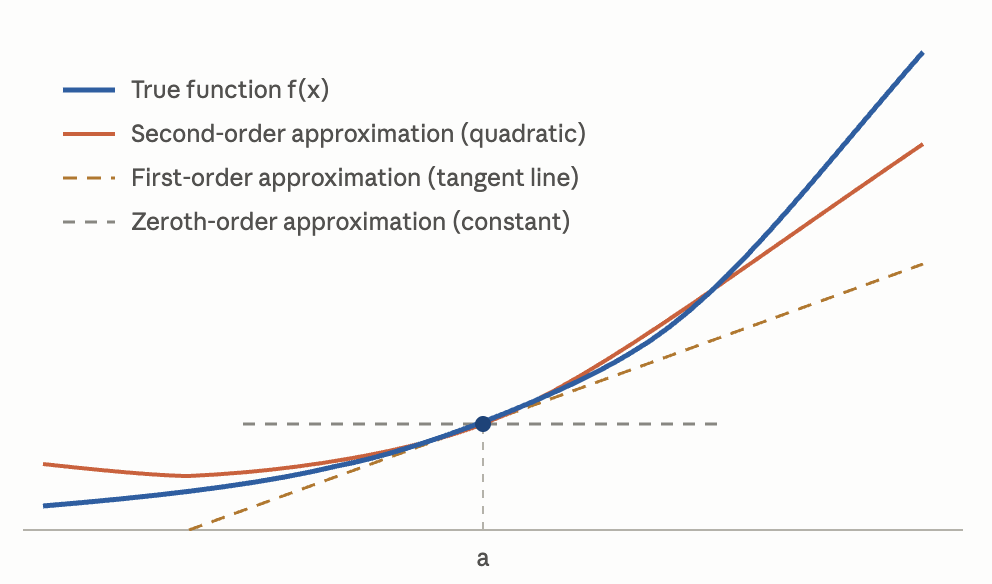

Nearly every optimizer we use in deep learning, from plain SGD to Newton-style methods, is built on the same idea: construct a local polynomial approximation of the loss and derive an update from that approximation. I write this note to briefly review Taylor series and how it connects to optimization.
1. The Taylor series: Approximating a function with a polynomial
Complicated functions are hard to reason about, but polynomials are easy. The Taylor expansion is the bridge between the two. Suppose \(f(x)\) is smooth (its derivatives exist to every order we need). Then near \(a\), the function can be well approximated by a polynomial built from exactly that local information:
\[ f(x) = f(a) + f'(a)(x-a) + \frac{f''(a)}{2!}(x-a)^2 + \cdots + \frac{f^{(n)}(a)}{n!}(x-a)^n + R_n(x), \]where the remainder \(R_n(x)\) collects everything the first \(n\) terms miss. Each extra term adds one more piece of local structure.

Where do the coefficients \(\frac{f^{(k)}(a)}{k!}\) come from? Let's start with a polynomial centered at \(x=a\):
\[ P(x)=c_0+c_1(x-a)+c_2(x-a)^2+\cdots. \]Then choose the coefficients so that \(P(x)\) matches \(f(x)\) at \(a\), both in value and in its every-order derivatives.
- matching values: \(P(a) = c_0\), so \(c_0 = f(a)\);
- matching slopes: \(P'(x) = c_1 + 2c_2(x-a) + \cdots\), so \(c_1 = f'(a)\);
- matching curvature: \(P''(x) = 2c_2 + \cdots\), so \(c_2 = \frac{f''(a)}{2}\).
- ...
This gives the \(n\)-th order Taylor approximation:
\[ f(x) = \sum_{k=0}^{n} \frac{f^{(k)}(a)}{k!}(x-a)^k + R_n(x). \]If \(R_n(x)\to 0\) as \(n\to\infty\), the approximation becomes exact and gives the Taylor series:
\[ f(x) = \sum_{k=0}^{\infty} \frac{f^{(k)}(a)}{k!}(x-a)^k. \](The special case \(a = 0\) is the Maclaurin series: \(f(x) = \sum_{k=0}^{\infty} \frac{f^{(k)}(0)}{k!}x^k\).)
Note that the Taylor series may diverge or converge to something other than \(f(x)\). A classic example is \(f(x)\)=\(e^{-1/x^2}\), all of whose derivatives vanish at \(0\), so its series at \(0\) is identically zero, even though the function itself is not. Functions whose Taylor series converges to \(f(x)\) in a neighborhood of \(a\) are called real analytic at \(a\).
2. The loss through a Taylor lens
Training a neural network can be seen as a minimization problem:
\[ \min_\theta L(\theta), \]where \(\theta\) is the neural network parameters, possibly at a scale of millions or billions. An optimizer keeps asking one question: if I nudge the parameters by \(\Delta\theta\), what happens to the loss? That is precisely a question about \(L(\theta + \Delta\theta)\), and the Taylor expansion answers it:
\[ L(\theta + \Delta\theta) \approx L(\theta) + \nabla L(\theta)^\top \Delta\theta + \tfrac{1}{2}\,\Delta\theta^\top H(\theta)\,\Delta\theta. \]The three components extend the same intuition from the one-dimensional case: the gradient \(\nabla L(\theta)\) is the local slope, the Hessian \(H(\theta)\) is the local curvature, and \(\Delta\theta\) is the step we are about to take. An optimizer is defined by how much of this expansion it keeps.
3. SGD: act on the first-order term
Keep only the linear part:
\[ L(\theta + \Delta\theta) \approx L(\theta) + \nabla L(\theta)^\top \Delta\theta. \]To make the loss go down we need \(\nabla L(\theta)^\top \Delta\theta < 0\), a natural choice is to take
\[ \Delta\theta = -\eta\,\nabla L(\theta) \]with a small step size \(\eta > 0\) and substituting back:
\[ \nabla L(\theta)^\top\!\left(-\eta\,\nabla L(\theta)\right) = -\eta\,\lVert \nabla L(\theta) \rVert^2 \le 0, \]so the linear model guarantees descent. This is exactly gradient descent, and with mini-batch gradients, SGD:
\[ \theta_{t+1} = \theta_t - \eta\,\nabla L(\theta_t). \]4. Newton's method: act on the second-order term
Keep the quadratic term too, and instead of merely picking a direction, minimize the model itself over \(\Delta\):
\[ L(\theta + \Delta) \approx L(\theta) + \nabla L(\theta)^\top \Delta + \tfrac{1}{2}\,\Delta^\top H \Delta. \]Setting the derivative with respect to \(\Delta\) to zero,
\[ \nabla L(\theta) + H\Delta = 0 \;\Rightarrow\; \Delta = -H^{-1}\nabla L(\theta), \]which gives the Newton update:
\[ \theta_{t+1} = \theta_t - H^{-1}\nabla L(\theta_t). \]The contrast with SGD is sharp. Because the quadratic model has a minimum, Newton's method needs no external step size: the curvature sets both the direction and the scale, rescaling each coordinate by how sharply the loss bends there. However, the catch is cost: with billions of parameters, \(H\) can be neither stored nor inverted. That single obstacle shapes modern optimizer design, whether through first-order methods that mimic curvature cheaply (Adam's per-coordinate operation) or through structured approximations of \(H\) itself (K-FAC, Shampoo). One Taylor expansion, truncated at different orders under a compute budget, spans essentially the whole optimizer landscape.
References
- 3Blue1Brown, Taylor series | Chapter 11, Essence of calculus (YouTube).
- M. D. Porter, Optimization with Taylor Expansions: Gradient Descent, Newton's Method, XGBoost (SYS 6018 lecture notes, University of Virginia).
- Cornell CS 4/5780, Lecture 11: Gradient Descent (and Beyond) (Spring 2022).